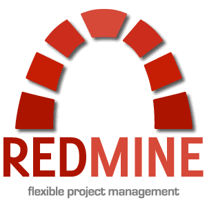
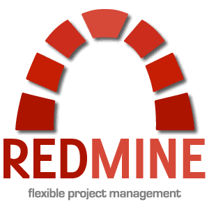

Purdue University class of 2021
West Lafayette, IN
Bachelor of Science in Computer Science
Concentrations in Machine Intelligence & Software Engineering
Minor in Economics & Mathematics
Cumulative GPA 3.94/4.0
West Lafayette, IN
Bachelor of Science in Computer Science
Concentrations in Machine Intelligence & Software Engineering
Minor in Economics & Mathematics
Cumulative GPA 3.94/4.0
Universidade Federal do Rio de Janeiro
Mar 2017 - Jul 2017
Rio de Janeiro, RJ, Brazil
Bachelor of Science in Computer Science
Cumulative GPA 8.9/10

Mar 2017 - Jul 2017
Rio de Janeiro, RJ, Brazil
Bachelor of Science in Computer Science
Cumulative GPA 8.9/10
Colegio Santo Inacio
Mar 2014 - Dec 2016
Rio de Janeiro, RJ, Brazil
High School
Cumulative GPA 9.3/10
Class Rank top 5%

Mar 2014 - Dec 2016
Rio de Janeiro, RJ, Brazil
High School
Cumulative GPA 9.3/10
Class Rank top 5%
Summer Intern
Salesforce Remote Intern due to COVID
May 2020 - Aug 2020Summer intern at Salesforce, where I worked on developing code as well as writing automated tests in Java to bring new features for the Flow Builder platform.
I had the opportunity to work on a feature that has billions of monthly uses, updating it and integrating it to the newest technologies inside the platform.
The biggest challenge I faced during the internship was being remote due to Covid-19. It was really hard to get used to work with a huge codebase while being away from my teammates and mentors.
Undergrad Teaching Assistant & Lab Lead
Purdue University West Lafayette, IN
Jan 2018 - May 2020UTA for CS18000 - Problem Solving And Object-Oriented Programming during Spring and Fall, 2018 and Spring 2019.
Some of my duties as an UTA were attend lab sections to help students with Java programming questions and proctor examinations.
I was also responsible for developing assignments such as homeworks, lab assignments and projects. That involves, in a group of 3 developers, come up with an idea for the problem students should solve, develop a solution, test cases using JUnit and write a handout for that assignment.
Some of my duties as Lab Lead were to lead a small team of three to four UTAs to actively help students during lab time. I was also responsible for holding office hours once a week to help students with general questions about the course work and JAVA in general.
Summer Intern
Visagio Technology Rio de Janeiro, RJ, Brazil
May 2018 - Aug 2018, May 2019 - PresentSummer Intern at Visagio Technology during the Summer of 2018, where I worked on projects involving Robotic Process Automation (UIPath) and Ruby on Rails (Redmine).
Developed projects to boost productivity and automatize processes of our clients to increase profit, always targeting a high level of excellence in service and technical development
I came back as a Summer Intern at Visagio Technology for the Summer of 2019, when I worked on projects involving Severs and Systems Security and development of chatbots using Dialogflow.
I researched and implemented security solutions for the company systems and worked on the development of a chatbot to make conversations between the clients and the enterprise easier and faster, boosting our capabilities of solving our clients issues with excellence and in a timely manner.
Advanced in C, Lua, Java and Python

Intermediate in HTML, CSS, Bootstrap, C++, Visual Basic, C#, JavaScript and ReactJS
Knowledge of Bash, NodeJS, Ruby and Rails

Intermediate in HTML, CSS, Bootstrap, C++, Visual Basic, C#, JavaScript and ReactJS
Knowledge of Bash, NodeJS, Ruby and Rails
Fall 2020 Purdue University
CS 40800 Software Testing CS 47100 Introduction to Artificial Intelligence CON 21700 Science Writing & Presentation EAPS 32700 Climate, Science & Society
Spring 2020 Purdue University
CS 34800 Information Systems CS 38100 Introduction to Analysis of Algorithms ECON 36000 Econometrics MA 41600 Probability
Fall 2019 Purdue University
CS 30700 Software Engineering I CS 37300 Data Mining & Machine Learning FR 10200 French Level II PHYS 22100 General Physics POL 23500 Rich and Poor Nations STAT 35000 Intro to Statistics
Spring 2019 Purdue University
CS 25200 Systems Programming MA 26500 Linear Algebra ECON 45100 Game Theory EAPS 10000 Planet Earth FR 10100 French Level I
Fall 2018 Purdue University
CS 25000 Computer Architecture CS 25100 Data Structures and Algorithms MA 26100 Multivariate Calculus ECON 34000 Intermediate Microeconomic Theory PHYS 22000 General Physics
Spring 2018 Purdue University
CS 18200 Foundation of Computer Science CS 24000 Programming in C MA 16200 Plane Analytic Geometry And Calculus II ECON 25200 Macroeconomics ENGL 10600 First-Year Composition
Fall 2017 Purdue University
CS 18000 Problem Solving And Object-Oriented Programming CS 19100 Freshman Resources Seminar CS 19300 Tools MA 16100 Plane Analytic Geometry And Calculus I ECON 25100 Mircoeconomics
Spring 2017 Universidade Federal do Rio de Janeiro
MAB120 Computing I MAB111 Fundamentals of Digital Computing MAB624 Integers and Cryptography MAB112 Information Systems MAE111 Infinitesimal Calculus I
CS 40800 Software Testing CS 47100 Introduction to Artificial Intelligence CON 21700 Science Writing & Presentation EAPS 32700 Climate, Science & Society
Spring 2020 Purdue University
CS 34800 Information Systems CS 38100 Introduction to Analysis of Algorithms ECON 36000 Econometrics MA 41600 Probability
Fall 2019 Purdue University
CS 30700 Software Engineering I CS 37300 Data Mining & Machine Learning FR 10200 French Level II PHYS 22100 General Physics POL 23500 Rich and Poor Nations STAT 35000 Intro to Statistics
Spring 2019 Purdue University
CS 25200 Systems Programming MA 26500 Linear Algebra ECON 45100 Game Theory EAPS 10000 Planet Earth FR 10100 French Level I
Fall 2018 Purdue University
CS 25000 Computer Architecture CS 25100 Data Structures and Algorithms MA 26100 Multivariate Calculus ECON 34000 Intermediate Microeconomic Theory PHYS 22000 General Physics
Spring 2018 Purdue University
CS 18200 Foundation of Computer Science CS 24000 Programming in C MA 16200 Plane Analytic Geometry And Calculus II ECON 25200 Macroeconomics ENGL 10600 First-Year Composition
Fall 2017 Purdue University
CS 18000 Problem Solving And Object-Oriented Programming CS 19100 Freshman Resources Seminar CS 19300 Tools MA 16100 Plane Analytic Geometry And Calculus I ECON 25100 Mircoeconomics
Spring 2017 Universidade Federal do Rio de Janeiro
MAB120 Computing I MAB111 Fundamentals of Digital Computing MAB624 Integers and Cryptography MAB112 Information Systems MAE111 Infinitesimal Calculus I
Experience with Linux OS, Git, Dialogflow, Redmine, UiPath, Unity and Android Studio



Native Language Portuguese

Fluent in English
Advanced Knowledge of Spanish
Basic Knowledge of French

Teaching Assistant
Colegio Santo Inacio Rio de Janeiro, RJ, Brazil
Mar 2013 - Nov 2015I taught Mathematics, Physics and Chemistry for young people and adults who didn't have had access to a basic education when younger, in a voluntary program offered by my high school.
Community Volunteer
TETO - Brasil Rio de Janeiro, RJ, Brazil
Apr 2017Contributed to the constructions of houses to homeless people in slums. Also, I helped to raise money to finance these constructions, raising over 6K through social media campaign and fundraising events.

Founding Member and Financial Manager
Scope Consulting Purdue University, West Lafayette, IN
Nov 2017 - May 2019Founding Member and Financial Manager of Scope Consulting, a Junior Initiative at Purdue University.
Affiliated to the Junior Enterprise USA movement, our goal is to bring innovations and quality to businesses near us through engineering and software consulting projects, while improving the technical and professional skills of our members.
Helped to found the JI during the fall of 2017, and was elected the Initiative's first Financial Manager.
Also, I designed the JI website.
Treasurer
BRASA @ Purdue Purdue University, West Lafayette, IN
Oct 2017 - May 2019Active member of the Brazilian Student Association at Purdue University, involved in organizing events to bring the Brazilian community together in the greater Lafayette area and promote Brazilian culture inside the University.
I held the position of Treasurer during the academic year of 2018/2019.
2018 JE USA Summit
Hosted by JE USA Emory University, Atlanta, GA
Oct 2018Opportunity to network and connect to Junior Enterpreneuers from different JEs from around the USA and Europe. The event included speeches, woprkshops and techonology pannels in different topics such as Agile Methodology and Blockchain, with the participation of leaders of the Blockchain Chamber of Commerce Atlanta.
Also, I was a member of one of the two winning teams of the JE USA Challenge, a case competition regarding Industry 4.0 and its technology improvements and how to solve real world problem holding ethical and professional values while facing these changes, that was developed and pitched within 28 hours.
2017 Hello World Hackathon
Hosted by Purdue CS Purdue University, West Lafayette, IN
Sep 2017Hello World is the freshman only Hackathon hosted by Purdue University. It was the first time I participated in such event, and in the period of 24 hours, I worked in a team of 4 Computer Science freshmen to develop 'Encypt0', a cryptography android app.
The greatest challenge we ran into was the fact that none of us had any previous experience with Android Studio or Android App Development, so we had to learn everything during the weekend. It was a fantastic opportunity to learn a complete new techonology and network with amazing people.